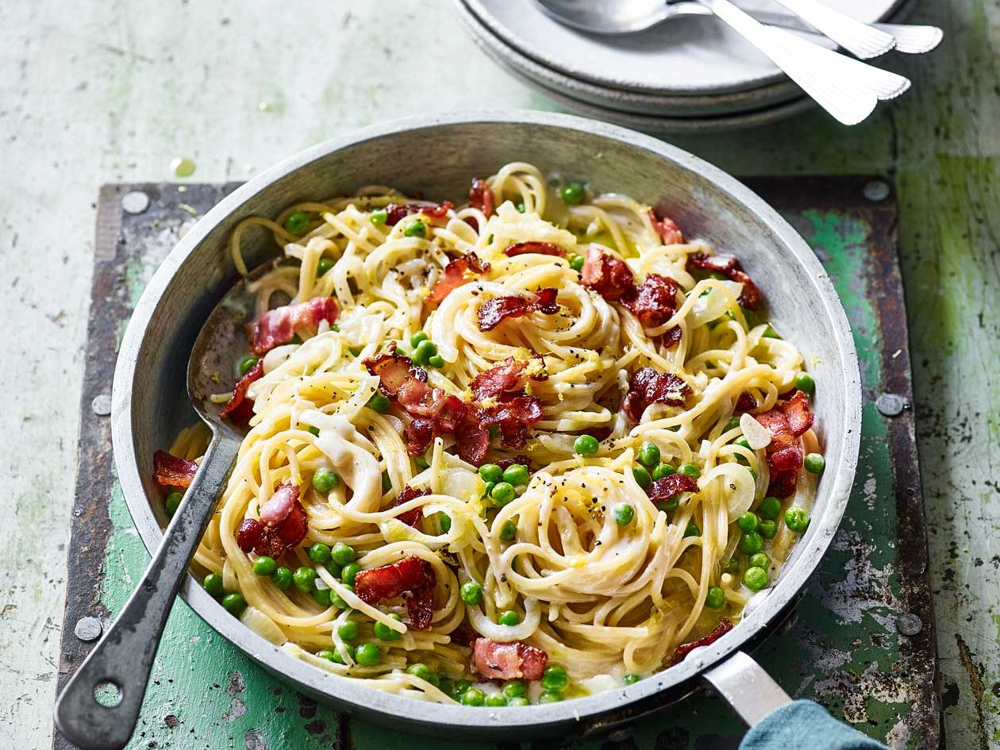

Pasta with Bacon and Peas

Pasta with Bacon and Peas
Pasta in a red sauce with bacon and peas.
Ingredients
- 1 (16 ounce) package spaghetti
- 1 tablespoon olive oil
- 0,25 pound turkey bacon, cut into small pieces
- 0,5 large onion, chopped
- 1 clove garlic, minced
- 2 (15 ounce) cans tomato sauce
- 1,5teaspoons chopped fresh parsley
- 0,25 teaspoon dried basil
- 1 teaspoon garlic powder
- 0,5 teaspoon pepper
- 1 (15 ounce) can peas, drained
- 0,5 cup grated Romano cheese
- Step 1
Bring a large pot of lightly salted water to a boil. Add pasta and cook for 8 to 10 minutes or until al dente; drain.
- Step 2
Heat oil in a large pot over medium heat. Saute bacon, onion and garlic until lightly browned. Stir in tomato sauce. Season with parsley, basil, garlic powder and pepper. Bring to a boil, reduce heat, and simmer 20 to 30 minutes, stirring occasionally. Stir in peas. Toss with pasta until evenly coated. Sprinkle top with Romano.